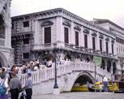

呂清夫 撰文

世人需要美好的回憶，城市則需幽雅的古蹟。日月潭的湖光山色絕不比西湖差，差就差在少了一些古蹟，萊茵河畔如果少了那些古堡，那不過是一條尋常的河流而已。台灣古蹟不多，又動輒橫遭破壞，有人說，這是最年輕的古蹟，最徹底的毀滅。最近又有一則令人氣憤的新聞，那就是陽明山空軍新生社在古蹟學者前來會勘之前，國家公園警察大隊竟搶先一步把它夷為平地，讓前往會勘的學者當場傻眼，為之氣結。據相關學者指出，這棟建築物長達七十公尺，建材大半使用當地出產的安山岩，石砌法為陽明山地區獨特的工法，極具地方特色。本來大家約定今年五月九日會勘，卻被臨時取消，但古蹟也在這天全被毀掉，做法實在可議。對於公園的一點點古蹟都要趕盡殺絕，我們不會覺得汗顏嗎？這種不文明的行徑到底要幾時才能終結？這種行徑在台灣實在屢見不鮮，去年七月植物園內的咾咕石園林古蹟在未正式公告列入古蹟之前，亦由省林業試驗所先下手把它毀掉。當時市府民政局曾經嚴詞指責林業試驗所「帶頭破壞古蹟，令人痛心疾首，是全民之辱」。原來民政局早已邀請學者會勘，並決議聲請內政部擴大古蹟指定範圍，同時已經正式行文省林業試驗所，不料仍舊慘遭拆毀。植物園內的咾咕石園林古蹟原屬台灣布政使司衙門的一部份，日據時代興建中山堂時，因為台灣布政使司衙門擋在那裡，他們遂將其硬體整個移到植物園內，咾咕石園林亦隨之同行，但遷移方式跟林安泰古厝重建於新生公園完全不同，他們是把古蹟像開車子般的「開」到別的地方，需要十分專業的技術，故遷移過後的台灣布政使司衙門在今天還可被內政部列入二級古蹟，至於林安泰古厝就與古蹟無關了。可惜當初指定二級古蹟之時，未將咾咕石園林一併列入，直到今天才想到它，但已經來不及了。省林業試驗所則認為咾咕石園林年久失修，對遊客有危險，必須拆掉，以便他們擴增「多肉植物區」。其實他們果真關心遊客，便要多留一點古蹟給大家觀賞，一般民眾未必懂得多肉植物。這種喊拆就拆在台南的「台灣第一街」也發生過，大家似乎把古蹟指定視同洪水猛獸，這如果是民間業主，或許還有話說，但如果是官方所為，那實在是不可原諒了。這兩天，一百多年歷史的威尼斯國際美術雙年展中，有個台灣館行將開幕，館址所在就是一個古蹟，我們音譯成普里奇歐尼宮。但是說來你或許不信，它原來竟是一個監獄，所以日本人給它翻譯成一個奇怪的名稱，叫做「新牢獄宮」，讓人覺得罪犯似乎是住在宮殿裡面（見上圖）。它跟門口的那座橋都已經有四百多年的歷史，位在著名的「總督宮」之旁，與之相比，可謂小巫見大巫，但義大利人不以其小而不加保護。目前搖身一變，它已成為國際藝文活動的重鎮，而威尼斯的觀光資源就是這樣一點一滴累積起來的。那麼，台北僅剩的松山酒廠、土地銀行、自來水廠、華山車站……等等歷史建物，今後可否學學威尼斯，可否拋開庸俗的理由而鏟下留情呢？惟其如此，綠島、土城的看守所將來或許才有可能成為台灣的「新牢獄宮」，台灣也才可能成為近悅遠來的「美麗島」。
原載1999.7.5中央日報